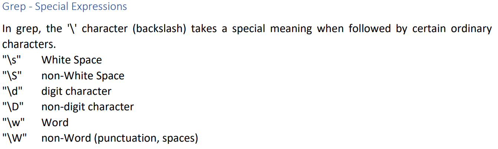

stands for global/regular expression/print
or simply, find things
grep <expression> <file>
cat ping.txt | grep "64 bytes" - finds the line that contains the expression specified
-i case insensitive
-v select opposite (grep not "expression")
-n print line number
-A prints a number of lines afterthe match ( grep -A3 )
-B prints a number of lines beforethe match (grep -B2)
-C prints a number of lines to both sidesthe match (grep -C2)
Grep - Anchor Matches
Anchors are special characters that specify where a match must occur to be valid in the line. The first ones are the "^" and the "$" anchors. The "^" anchor stands for anything starting with a particular pattern.

In contrast, filter any string that ends with the letter "e" using the "$" anchor.

Another useful anchor is the "*", which means repeating the previous character or expression zero or more times.

